Méthodes de résolution pour le contrôle optimal géométrique et applications
Olivier Cots
HDR - Mercredi 8 avril 2026 - INP Toulouse
Rapporteurs
- Moritz Diehl
Professeur, Université de Fribourg - Nicolas Petit
Professeur, Mines ParisTech - Mario Sigalotti
Directeur de Recherche Inria Paris
Composition du jury
- Joseph Gergaud
Professeur émérite, INP Toulouse - Nicolas Petit
Professeur, Mines ParisTech - Aude Rondepierre - Présidente du jury
Professeure, INSA Toulouse - Mario Sigalotti
Directeur de Recherche Inria Paris - Romain Veltz
Chargé de Recherche Inria, UCA
Parcours
2009–2012
Thèse de doctorat
Institut de Math. de Bourgogne
Contrôle optimal géométrique : méthodes homotopiques et applications
Composition du jury :
- J.-M. Coron (Président)
- U. Boscain (Rapporteur)
- E. Trélat (Rapporteur)
- B. Bonnard (Examinateur)
- P. Martinon (Examinateur)
- M. Mirrahimi (Examinateur)
- J.-B. Caillau (Directeur)
- J. Gergaud (Directeur)
2012–2014
Post-doctorat
Inria Sophia Antipolis
Équipe McTAO
Encadrants :
- B. Bonnard,
- J.-B. Pomet
2014–présent
Maître de conférences
INP-ENSEEIHT / IRIT
Département Sciences du Numérique / Équipe APO
Délégation Inria (2025–2026)
Équipe McTAO, Sophia Antipolis
Enseignement
Matières enseignées : Contrôle optimal, Équations différentielles, Mesure et Intégration, Julia, Optimisation…
Localisation : N7, Prépa INP, TSE, INSA
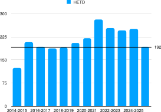
Contrôle optimal
Pour un système dynamique contrôlé, déterminer une commande qui minimise un critère parmi toutes les commandes admissibles.
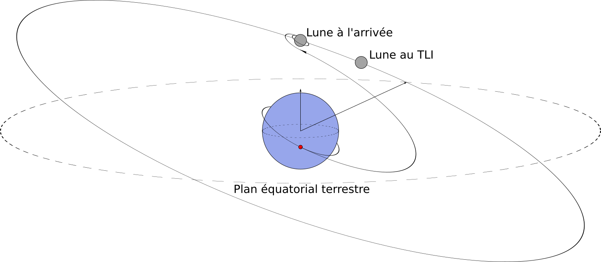
Injection Trans-Lunaire (TLI) : manœuvre d’injection sur trajectoire de transfert Terre–Lune
Thématique de recherche
Développement d’outils théoriques et numériques issus du contrôle optimal (géométrique) pour le calcul de synthèses (sous-)optimales.
- Système contrôlé : \(\dot{x} = f(x,u)\)
- Condition initiale : \(x_0 \in \mathbf{R}^n\)
- Contrôle : \(u \in \mathcal{U} \subset L^{\infty}_{\mathrm{loc}}([0,+\infty), \mathbf{R}^m)\)
- Coût : \(J_{x_0}(u)\)
- Cible : \(x_f \in \mathbf{R}^n\) au temps \(t_f \ge 0\)
- Fonction valeur : \[V(x_0) \coloneqq \inf_{u \in \mathcal{U}} \, \left\{ J_{x_0}(u) \mid x(t_f, x_0, u) = x_f \right\}\]
Synthèse optimale : pour un ensemble de conditions initiales \(\Omega \subset \mathbf{R}^n\), calculer \(V\) et
\[\bigcup_{x_0 \in \Omega} \left\{ u \in \mathcal{U} \mid V(x_0) = J_{x_0}(u) \right\}.\]
Cas régulier (mono-hamiltonien)
Commande lisse ⇒ flot hamiltonien unique.
Outils : lieux conjugué et de coupure.
Applications : Géométrie riemannienne, navigation de Zermelo.
Cas non régulier (multi-hamiltonien)
Commande bang-bang / singulière ⇒ concaténation de flots.
Outils : algèbre de Lie, surfaces de commutation.
Applications : IRM, avionique.
Activité scientifique
Production scientifique
| Type | Nombre |
|---|---|
| Journaux internationaux (ACL) | 20 |
| Conférences internationales (actes) | 14 |
| Chapitres d’ouvrages | 3 |
| Logiciels open-source | 4 |
| Conférences invitées | 7 |
| Conférences sans actes | 47 |
| Séminaires invités | 11 |
| Cours en écoles thématiques | 4 |
| Brevets | 1 |
Environ 30 % (50 % depuis 2014) des articles de journaux et actes de conférences sont co-écrits avec un doctorant ou post-doctorant.
Organisation de congrès (4) / écoles (1)
JuliaCon Local Paris 2025
CNAM Paris, 2–3 oct. 2025 – comité d’organisationJulia and Optimization Days 2024
Toulouse, 28–30 oct. 2024 – comité localÉcole de Contrôle Optimal Numérique 2018
Toulouse, 3–7 sept. 2018 – avec J. Gergaud, S. Jan
SMAI-MODE 2016, KEPASSA 2015
Mini-symposia organisés (6)
- SMAI 2025 (Carcans Maubuisson), avec J. Rouot
- FGS Optimisation 2024 (Gijon)
- SMAI 2023 (Guadeloupe), avec L. Dell’Elce
- ICIAM 2019 (Valencia), avec J.-B. Caillau, P. Martinon
- SMAI 2019 (Guidel), avec L. Bourdin
- SMAI 2017 (La Tremblade)
Encadrement doctoral
3 thèses soutenues
- D. Goubinat (2014–17, CIFRE Thales)
avec P. Delpy, J. Gergaud - B. Wembe (2018–21, bourse MESR)
avec B. Bonnard, J. Gergaud - R. Dutto (2021–24, CIFRE Vitesco) - Dérogation
avec O. Flebus, S. Jan, S. Laporte, M. Sans
1 post-doctorat : T. Verron (2016–17), avec J. Gergaud
Autres encadrements
- 4 stages de Master 2
- 19 stages de Master 1
- 7 projets longs (groupes de 4-5 élèves)
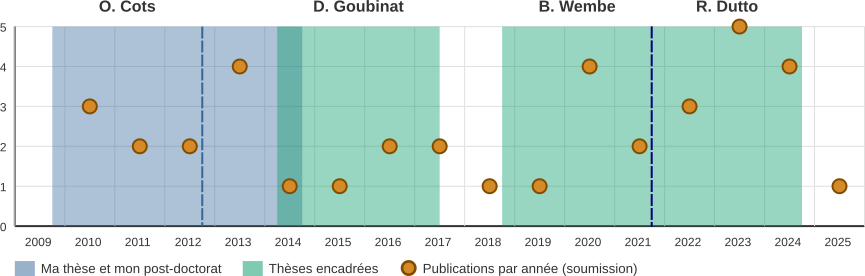
Thèse Rémy Dutto (2021-2024) — Vitesco Technologies
Méthode à deux niveaux et préconditionnement géométrique en contrôle optimal
Application au problème de répartition de couple des véhicules hybrides électriques
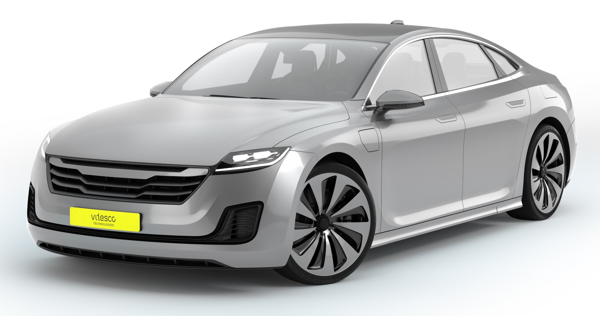
Problème de contrôle optimal
\[ \begin{equation} \begin{array}{ll} \displaystyle \min_{x,u} \int_{t_0}^{t_f} f^0\big(t, x(t), u(t)\big) ~\mathrm dt \\[1em] \text{s.c.}~~\dot x(t) = f\big(t,x(t), u(t)\big), & t\in [t_0, t_f]~\mathrm{p.p.}, \\[0.5em] \phantom{\text{s.c.}~~} u(t) \in \mathrm U(t), & t\in [t_0, t_f], \\[0.5em] \phantom{\text{s.c.}~~} c\big(x(t_0), x(t_f)\big) = 0. \end{array} \end{equation} \]
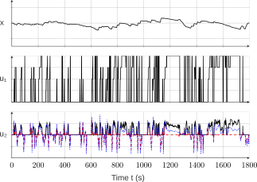
Changement de paradigme : au lieu de chercher un contrôle \(u(t)\), on cherche les états intermédiaires \(X_i\) en découpant l’intervalle \([t_0, t_f]\).
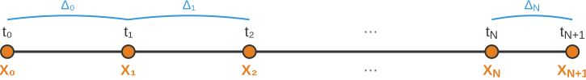
Thèse Rémy Dutto (2021-2024) — Reformulation équivalente
On découpe l’intervalle \([t_0, t_f]\) en \(N+1\) sous-intervalles \(\Delta_i = [t_i, t_{i+1}]\). Sur chaque \(\Delta_i\), on définit le problème aux conditions initiales et finales \(a\in \mathbb{R}^n\) et \(b \in \mathbb{R}^n\) fixées
\[ \begin{equation} \begin{array}{ll} \displaystyle V_i(a,b) = \min_{x,u} \int_{t_i}^{t_{i+1}} f^0\big(t, x(t), u(t)\big)~ \mathrm dt & \\[1em] \text{s.c.}~~ \dot x(t) = f\big(t, x(t), u(t)\big), & t \in \Delta_i~\mathrm{p.p.}, \\[0.5em] \phantom{\text{s.c.}~~} u(t) \in \mathrm U(t), & t \in \Delta_i, \\[0.5em] \phantom{\text{s.c.}~~} x(t_i) = a, \quad x(t_{i+1}) = b. \end{array} \end{equation} \]
On définit la formulation équivalente suivante
\[ \begin{equation} \begin{array}{l} \displaystyle \min_{X} V(X) \coloneqq \displaystyle \sum_{0 \le i \le N} V_i(X_i, X_{i+1}), \\ \text{s.c.}~~ c(X_0, X_{N+1}) = 0, \quad X \in \mathcal X, \end{array} \end{equation} \]
où \(X = (X_0, X_1, \ldots, X_{N+1})\) et \(\mathcal X \subset (\mathbb{R}^n)^{N+2}\) est l’ensemble des états intermédiaires accessibles.
Si les fonctions valeur \(V_i\) et les contrôles optimaux associés sont connus, il suffit de résoudre ce problème.
Thèse Rémy Dutto (2021-2024) — Méthode Macro-Micro
Approximation des fonctions valeur \(V_i\) par des réseaux de neurones : \(V_i \approx C_i\).
\[ \begin{array}{ll} \textrm{(Macro)} & \displaystyle \left\{ \begin{array}{l} \displaystyle \min_{X} C(X) \coloneqq \sum_{0 \le i \le N} C_i(X_i, X_{i+1}), \\ \text{s.c.}~~ X \in \mathring{\mathcal X}, \quad c(X_0, X_{N+1}) = 0, \end{array} \right. \end{array} \]
pour obtenir \(\hat X = (\hat X_0, \dots, \hat X_{N+1})\), puis résolution des \(N+1\) problèmes indépendants sur \(\Delta_i = [t_i, t_{i+1}]\) :
\[ \begin{array}{ll} \textrm{(Micro)} & \displaystyle \left\{ \begin{array}{ll} \displaystyle \min_{x,u} \int_{t_i}^{t_{i+1}} f^0 \big( t, x(t), u(t) \big) ~\mathrm dt, \\[1em] \text{s.c.}~~ \dot x(t) = f \big( t, x(t), u(t) \big), & \\[0.25em] \phantom{\text{s.c.}~~} u(t) \in \mathrm U(t), & \\[0.25em] \phantom{\text{s.c.}~~} x(t_i) = \hat X_i, \quad x(t_{i+1}) = \hat X_{i+1}. \end{array} \right. \end{array} \]
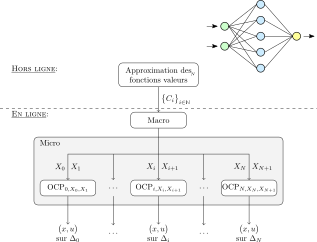
Schéma de la méthode Macro-Micro et apprentissage hors-ligne
Thèse Rémy Dutto (2021-2024) — Résultats
Ingrédients clés pour les problèmes Micro
- Gradients \(\nabla C_i(\hat X_i, \hat X_{i+1})\) pour améliorer l’initialisation
- Préconditionnement géométrique pour accélérer la convergence (article en préparation avec R. Dutto)
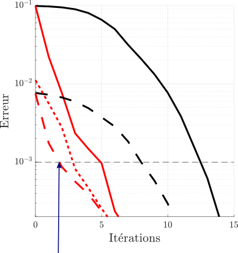
Convergence en 2 itérations grâce aux ingrédients clés
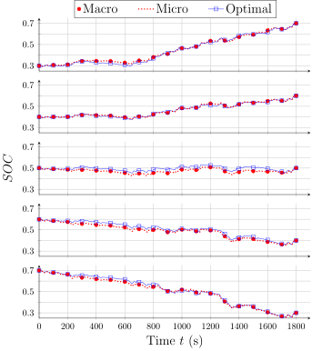
Comparaison solution optimale vs Macro-Micro
1
Méthodes numériques et logiciels développés
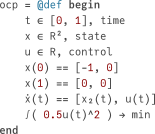
3
Le problème de navigation de Zermelo
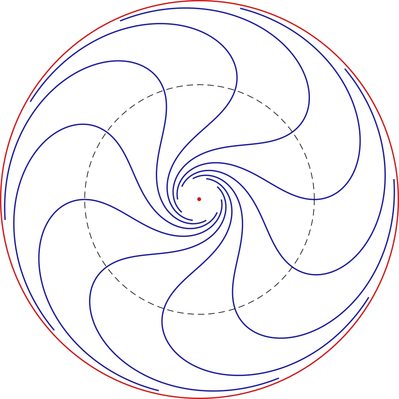
2
Géométrie riemannienne et ses extensions

4
Imagerie médicale
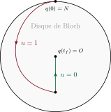
1
Méthodes numériques et logiciels développés
3
Le problème de navigation de Zermelo
2
Géométrie riemannienne et ses extensions
4
Imagerie médicale
Méthodes numériques et logiciels développés
Trois générations de logiciels (open-source)
HamPath (2009–2019)
 →
→  /
/ 
NutoPy (2019–2022)
 +
+ 
control-toolbox (2022–présent)
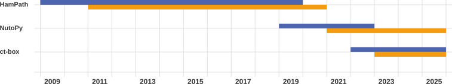
Méthodes indirectes : tir et second ordre (point conjugué)
Tir simple
Cadre régulier : Hamiltonien lisse \(H(x,p)\) issu du Principe du Maximum de Pontryagin (PMP) ⇒ système hamiltonien lisse \[\vec{H} = (\partial_p H, -\partial_x H).\]
Application exponentielle :
\[\exp(t \vec{H})(x_0, p_0)\]
solution au temps \(t\) de \(\dot{z} = \vec{H}(z),~ z(0) = (x_0,p_0)\)
Méthode de tir : résoudre \(S(p_0) = 0 ~\text{(Newton)}\)
\[S(p_0) = \pi\bigl(\exp(t_f\vec{H})(x_0,p_0)\bigr) - x_f,\]
\(\pi(x, p) = x\).
Tir multiple
- De stabilité (H.G. Bock, 1984) : découpage en sous-intervalles, conditions de raccordement.
- De structure (H. Maurer, 1976) : raccord d’arcs de natures différentes (bang, singulier, contraint).
Inconnues : \(p_0\), temps de commutation \(\tau_i\).
Second ordre (point conjugué)
Équation variationnelle : \(\delta\dot{z}(t) = \vec{H}'(z(t))\cdot\delta z(t)\)
- Cas régulier (A. Agrachev, 2004) :
- point conjugué ⇔ singularité de \(S'(p_0)\).
- CN2 et CS2 d’optimalité locale faible et forte.
- Cas singulier (B. Bonnard, 2003) : algorithmes spécifiques le long d’extrémales singulières (systèmes affines mono-entrée).
Systèmes affines mono-entrée
\[H = H_0 + u\,H_1, \quad u \in [-1,1]\]
Contrôle singulier (\(\{ \cdot , \cdot \}\) est le crochet de Poisson) : \[u_s(x, p) = -\frac{ \{ H_0, \{ H_0, H_1 \} \}(x, p) }{ \{ H_1, \{ H_0, H_1 \} \}(x, p) }\]
Les trois hamiltoniens :
- \(H_\pm = H_0 \pm H_1\)
- \(H_s = H_0 + u_s H_1\)
HamPath — Contexte et motivations
Difficultés des méthodes indirectes
- Sensibilité à l’initialisation : méthode de Newton (tir) nécessitant une bonne initialisation du vecteur adjoint \(p_0\) et des instants de commutations.
- Structure a priori : dans le cas multi-hamiltonien, il faut connaître la séquence d’arcs (bang, singuliers, contraints) avant de résoudre.
Deux stratégies de résolution pour initilialiser la méthode indirecte
- Méthode directe : problème discrétisé
- Homotopie : famille \(P(\lambda)\), \(\lambda \in [0,1]\)
| Code | Année | Type |
|---|---|---|
| BNDSCO | 1989 | indirect |
| cotcot | 2007 | indirect |
| Shoot | 2008 | indirect |
| HamPath | 2009 | indirect |
| Bocop | 2010 | direct |
| ACADO | 2011 | direct |
| GPOPS | 2013 | direct |
Présentation de HamPath
Depuis 2009 (avec J.-B. Caillau et J. Gergaud). Suivi de chemin différentiel (homotopie).
 →
→  /
/ 
Applications : avionique (avec D. Goubinat), géométrie riemannienne, navigation de Zermelo (avec B. Wembe), imagerie médicale, véhicule électrique, thermodynamique, transfert orbital.
Dès 2012 avant ma soutenance de thèse : B. Daoud (problème aux 3 corps spatial, thèse 2012), M. Lapert (contrôle quantique IRM, thèse 2012).
HamPath — Homotopie
Fonction homotopique : \[ \begin{array}{rcll} S \colon & \mathbf{R}^{N+1} & \longrightarrow & \mathbf{R}^N \\ & (y, \lambda) & \longmapsto & S(y, \lambda) \coloneqq S_\lambda(y) \end{array} \]
Hypothèse de régularité : \(0\) valeur régulière de \(S\) ⇒ \(\text{rang}(S'(y, \lambda)) = N\) sur \(S^{-1}(\{0\})\).
Méthode homotopique
Calcul de chemin de zéros \(r(s) = (y(s), \lambda(s))\) paramétré par l’abscisse curviligne \(s\).
Prédiction (E. L. Allgower, K. Georg, 2003) : intégration de \[ \dot{r}(s) = T(r(s)) \] où \(T(r)\) est l’unique vecteur tangent unitaire bien orienté dans \(\ker S'(r)\) (
dopri5/radaupour l’intégration etTapenadepour la différentiation automatique).Correction (E. Hairer, 1997) : Newton modifié avec factorisation QR (
LAPACK) pour résoudre \[ \min_{r} \|r - r_{\text{pred}}\| \quad \text{s.c.} \quad S(r) = 0. \]
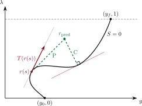
HamPath — Homotopie étendue et monitoring
Thèse de D. Goubinat CIFRE Thales Avionics, 2014–17
Lors du suivi homotopique, la structure peut changer : disparition d’arc, insertion d’arc singulier ou contraint.
Boucle d’homotopie étendue :
- Suivi du chemin de zéros
- Détection par monitoring (callback)
- Mise à jour de \(S(y,\lambda)\) (structure, dimension)
- Poursuite du suivi
Complémentarité numérique-théorique :
- Synthèses en temps court pour comprendre les changements (B. Bonnard, L. Faubourg & E. Trélat).
- Homotopie et monitoring pour le reste.
Application : montée d’avion
Min. temps de montée, contraintes CAS & Mach.
Homotopie sur \((\phi_{\max}, \psi_{\max})\) depuis VMO/MMO.
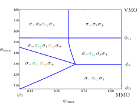
Cartographie des structures dans le plan \((\phi_{\max}, \psi_{\max})\).
Légende
- \(\sigma_\pm\) : arc bang
- \(\sigma_s\) : arc singulier
- \(\sigma_{c_1}\) : arc contraint (CAS)
- \(\sigma_{c_2}\) : arc contraint (Mach)
Résultat clé : émergence de la procédure CAS/Mach \[ \sigma_- \sigma_{c_1} \sigma_{c_2} \sigma_+ \] utilisée opérationnellement et comparaison.
NutoPy — Interopérabilité et limitations
Objectif : interopérabilité
Projet Inria ADT (2018, avec J.-B. Caillau, P. Martinon) : Faciliter la combinaison des méthodes directes et indirectes.
Stratégie efficace :
- Méthode directe ⇒ première solution + structure
- Méthode indirecte ⇒ raffinement de la solution
HamPath (2009)
 →
→  /
/ 
Bocop (2010)

NutoPy (2019)
 +
+ 
Bocop (2010)

NutoPy (2019)
 +
+ 
Bocop (2010)

control-toolbox (2022)
Transition stratégique
⇒ OptimalControl.jl (control-toolbox) sous l’impulsion de J. Gergaud et avec l’aide du SED Inria Sophia Antipolis.
Limitation : Définition du problème deux fois
Innovation : différentielle d’ordre 2 \[ \exp(t\vec{H})''(x_0, p_0) \] en plus de \(\exp(t\vec{H})'(x_0, p_0)\).
Application : calcul du lieu conjugué par homotopie sur des variétés de dimension 2. Besoin des dérivées de \(H\) jusqu’à l’ordre 3 (par différentiation automatique via Tapenade).
control-toolbox — OptimalControl.jl
control-toolbox — OptimalControl.jl
Méthode directe
Méthode indirecte
control-toolbox — Design et performances
Architecture modulaire et extensible
- DSL parsing : MLStyle.jl pour pattern matching sur AST généré par
@def - Modelers-Solvers : séparation claire, ADNLPModels/ExaModels + Ipopt/Knitro/MadNLP/MadNCL/Uno
- Différentiation automatique : ForwardDiff.jl, DifferentiationInterface.jl
- Méthodes indirectes : DifferentialEquations.jl + NonlinearSolve.jl
- Solveurs linéaires : MUMPS.jl (CPU), CUDSS.jl (GPU)
control-toolbox — Conclusion
Perspectives
Performance et HPC
- CTBenchmarks.jl : comparaisons systématiques
- CTFlows.jl : abstraction des flots, support GPU
- Pas de temps adaptatif (direct et indirect)
Fondations théoriques
- Extension du DSL et transformations symboliques
- Intégration ModelingToolkit
- Régularisation par points intérieurs
Applications
- Grande taille : IRM, contrôle quantique, ML
- Homotopie via BifurcationKit.jl
Tutoriels et documentation
- Nouveaux tutoriels : turnpike, temps libres
- Contraintes d’état et problèmes hybrides
Contributions — 32 contributeurs, 8463 commits
ocots (5957), jbcaillau (1170), PierreMartinon (477), 0Yassine0 (200), BaptisteCbl (151), j-l-s (140), AnasXbouali (71), AmielMetier (65), gergaud (55), agustinyabo (24), antoinepichon03 (23), HediChennoufi (19), baillietn (15), Yassin-Moukan (13), alegoupil (11), amontoison (10), Ousmane-prog (10), joseph-gergaud (9), YouriRenoud (9), ade4569 (6), srcansiz (5), michel2323 (4), oameye (3), gdalle (3), remydutto (3), abavoil (2), tmigot (2), loxim3 (2), mjacobse (1), Lupylune (1), frapac (1), BWembe (1)
1
Méthodes numériques et logiciels développés
3
Le problème de navigation de Zermelo
2
Géométrie riemannienne et ses extensions
4
Imagerie médicale
Géométrie riemannienne — Problème géodésique
Problématique : recherche de plus courts chemins sur une variété riemannienne \((M, g)\)
Minimisation de l’énergie
\[ \min_{q(\cdot)} \int_0^T g_{q(t)}(\dot{q}(t), \dot{q}(t)) \, \mathrm{d}t,~~ q(0) = q_0,~~ q(T) = q_1 \]
Hamiltonien
\[H(q,p) = \frac{1}{2} g^{-1}_q(p,p)\]
Système hamiltonien
\[\vec{H}(q,p) = \left(\frac{\partial H}{\partial p}, -\frac{\partial H}{\partial q}\right)\]
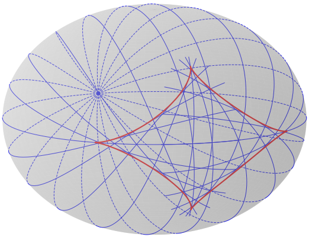
Ellipsoïde oblat : géodésiques (bleu) et lieu conjugué (rouge).
Géométrie riemannienne — Points conjugués et de coupure
Point de coupure
Point où la géodésique cesse d’être globalement minimisante :
- Soit un point conjugué
- Soit un point de séparation : deux géodésiques distinctes se rencontrent au même temps
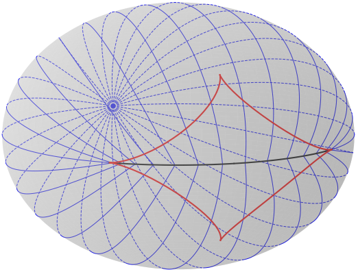
Lieu conjugué (rouge) et lieu de coupure (noir). Les extrémités du segment de coupure sont des points de rebroussement du lieu conjugué.
Le lieu de coupure détermine la synthèse optimale : pour \(q_1 \notin \mathrm{Cut}(q_0)\), il existe une unique géodésique minimisante joignant \(q_0\) et \(q_1\).
1
Méthodes numériques et logiciels développés
3
Le problème de navigation de Zermelo
2
Géométrie riemannienne et ses extensions
4
Imagerie médicale
Problème de navigation de Zermelo — Formulation (2D)
Problème de navigation
Soit \((M, g)\) une variété riemannienne de dimension 2 et \(F_0\) un champ de vecteurs (le courant).
Objectif : minimiser le temps de parcours entre \(q_0\) et \(q_1\)
Dynamique : \(\dot{q} = F_0(q) + u_1 F_1(q) + u_2 F_2(q)\)
avec \(|u|_g \leq 1\) et \((F_1, F_2)\) repère orthonormé local.
Classification selon l’intensité du courant
- \(|F_0|_g < 1\) : courant faible (Finsler/Randers)
- \(|F_0|_g = 1\) : courant modéré (une direction anormale)
- \(|F_0|_g > 1\) : courant fort (deux directions anormales)
Transport du disque des vitesses admissibles
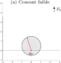
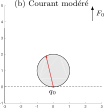
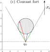
Navigation de Zermelo — Historique et collaborations
Contexte initial
Problème classique d’optimisation de trajectoire d’un navire soumis à un courant (Carathéodory, Zermelo 1931).
Chronologie des travaux
2018 — Discussion avec C. Balsa et J. Gergaud (ECON 2018, Toulouse) sur le contrôle de particules dans un champ de vortex ponctuels → stage M2 de B. Wembe
2018-2021 — Thèse de B. Wembe (co-encadrement avec B. Bonnard et J. Gergaud)
| Année | Publication | Co-auteurs | Sujet |
|---|---|---|---|
| 2020 | CONTROLO 2020 | Balsa, Gergaud, Wembe | Minimum energy control of passive tracers advection |
| 2021 | ESAIM COCV | Bonnard, Wembe | A Zermelo navigation problem with a vortex singularity |
| 2022 | Systems & Control Lett. | Bonnard, Gergaud, Wembe | Abnormal geodesics — fan shape of small time balls |
| 2023 | ESAIM COCV | Bonnard, Wembe | Zermelo navigation on surfaces of revolution |
| 2024 | AIMS Sciences | Bonnard, Privat, Trélat | Zermelo navigation on the sphere with revolution metrics |
| 2026 | Nonlinearity | Bonnard, Privat | Applications to micromagnetism |
| 2026 | En préparation | Dadjo, Wembe | Regularity of the value function and cut locus |
Navigation de Zermelo — Singularité cusp et optimalité
Théorème
Soit \(\sigma(\cdot)\) une géodésique anormale rencontrant \(\{|F_0|_g = 1\}\) en \(q_1\) au temps \(t_1\).
Si \(\dot\alpha(t_1) \neq 0\) et \(|F_0|_g = 1\) est un niveau régulier, alors \(\sigma(\cdot)\) présente un cusp semi-cubique \((t^2, t^3)\) en \(q_1\).
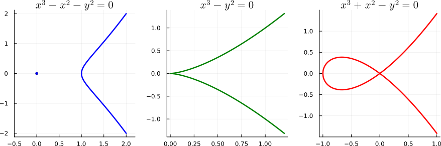
Déploiement universel : \(\mathbf{C}\)-nœud (point isolé + branche lisse) → cusp → \(\mathbf{R}\)-nœud (auto-intersection)
Théorème : Optimalité au voisinage d’un cusp semi-cubique
Arc anormal : temps-minimal de \(q_0\) au cusp \(q_1\)
→ \(q_1\) est un point conjugué
Hyperboliques : auto-intersectantes, optimales jusqu’au 2nd recoupement \(q_2\) avec l’anormale
→ \(q_2\) est un point de coupure
Elliptiques : temps-maximales, confinées en courant fort \(\{|F_0|_g > 1\}\)
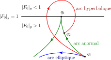
Navigation de Zermelo — Topologies et discontinuité de la fonction valeur
Fonction temps minimal : \(T_{q_0}(q) = \inf\{t : q \text{ accessible depuis } q_0 \text{ en temps } t\}\)
Boule zermélienne : \(B_Z(q_0, t) = \{q : T_{q_0}(q) < t\}\)
Deux topologies en courant fort :
- \(\mathcal{T}\) : topologie de \((M, g)\)
- \(\mathcal{T}_Z\) : topologie des boules zerméliennes (strictement plus fine)
⇒
\(T_{q_0}\) est continue pour \(\mathcal{T}_Z\) mais discontinue pour \(\mathcal{T}\).
Cette discontinuité vient des anormales (directions limites) → perte de contrôlabilité locale.
Autres contributions
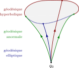
Forme éventail des petites sphères
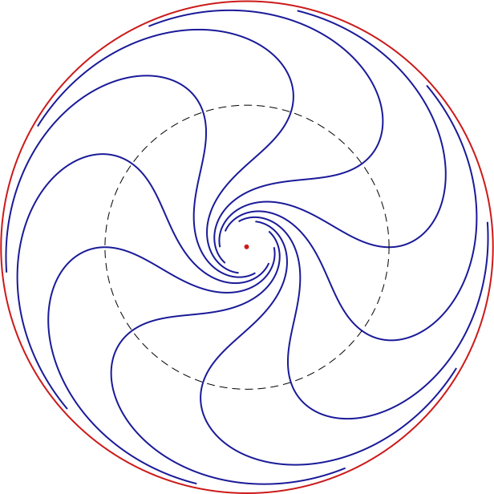
Cas vortex : feuilletage de Reeb

Ferromagnétisme : billard de Landau-Lifshitz
1
Méthodes numériques et logiciels développés
3
Le problème de navigation de Zermelo
2
Géométrie riemannienne et ses extensions
4
Imagerie médicale
Imagerie médicale — Contraste en IRM
Problème de contraste en IRM
Maximiser le contraste entre deux tissus (spins) via une impulsion radiofréquence (RF) optimale.
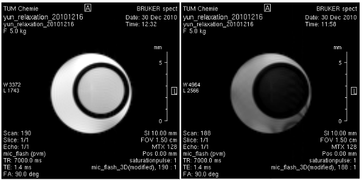
Validation in vitro : laboratoire de S. Glaser (TU München)
B. Bonnard, O. Cots, S. Glaser, M. Lapert, D. Sugny, Y. Zhang
Geometric optimal control of the contrast imaging problem in nuclear magnetic resonance
IEEE Trans. Automat. Control (2012)
Équations de Bloch F. Bloch, prix Nobel 1952
\[ \begin{aligned} \dot y(t) & = -\Gamma\, y(t) - u(t)\, z(t), \\[0.5em] \dot z(t) & = \gamma\,(1 - z(t)) + u(t)\, y(t), \end{aligned} \]
avec \(\gamma \ge 0\), \(\Gamma \ge 0\), \(|u(t)| \leq 1\).
⇒ Système affine mono-entrée en dimension 2
Imagerie médicale — collaboration et encadrement
Combinaison de méthodes géométriques, numériques, LMI et formelles
- Post-doc : combinaison directe/indirecte (genèse du projet ADT 2018), techniques LMI
- Co-encadrement du post-doc de T. Verron : méthodes formelles (bases de Gröbner)
B. Bonnard, M. Claeys, O. Cots, P. Martinon
Geometric and numerical methods in the contrast imaging problem in NMR
Acta Appl. Math. (2015)
B. Bonnard, O. Cots, J. Rouot, T. Verron
Time minimal saturation of a pair of spins and application in MRI
Math. Control Relat. Fields (2020)
Propriété de tangence au point de pré-saturation
Phénomène observé par T. Bayen sur un modèle de bioprocédés, puis formalisé théoriquement.
Apparaît également en IRM. Concerne la synthèse optimale des systèmes affines mono-entrée en temps minimal.
T. Bayen, O. Cots
Tangency property and prior-saturation points in minimal time problems in the plane
Acta Appl. Math. (2020)
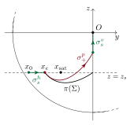
Imagerie médicale — Perspectives : passage à l’échelle
Du modèle idéal au contrôle d’ensemble
- Cadre idéal : dimension 2 (1 spin) et 4 (2 spins)
- Synthèse optimale complète (1 spin)
- Résultats fins (géométrie, LMI, méthodes formelles)
- Tentative de passage à l’échelle : jusqu’à 11 spins (hal-01001975, 2014)
- Perspective : contrôle d’ensemble
- Grand nombre de spins
- Paramètres hétérogènes (inhomogénéités \(B_0\), \(B_1\))
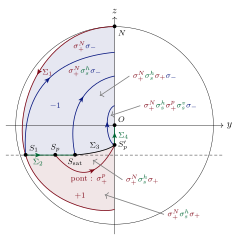
Synthèse optimale — cadre idéal en petite dimension
Publications
B. Bonnard, O. C, Y. Privat
The Zermelo navigation problem on the 2-sphere of revolution: an optimal control perspective with applications to micromagnetism
Nonlinearity (2026)
O. C, R. Dutto, S. Jan, S. Laporte
A bilevel optimal control method and application to the hybrid electric vehicle
Optim. Control Appl. Meth. (2025)
T. Bayen, A. Bouali, L. Bourdin, O. C
Loss control regions in optimal control problems
J. Differential Equations (2024)
B. Bonnard, O. C, B. Wembe
Zermelo navigation problems on surfaces of revolution and geometric optimal control
ESAIM Control Optim. Calc. Var. (2023)
O. C, J. Gergaud, D. Goubinat, B. Wembe
Singular versus Boundary Arcs for Aircraft Trajectory Optimization in Climbing Phase
ESAIM: Mathematical Modelling and Numerical Analysis (2023)
B. Bonnard, O. C, J. Gergaud, B. Wembe
Abnormal Geodesics in 2D-Zermelo Navigation Problems in the Case of Revolution and the Fan Shape of the Small Time Balls
Systems & Control Lett. (2022)
B. Bonnard, O. C, B. Wembe
A Zermelo navigation problem with a vortex singularity
ESAIM Control Optim. Calc. Var. (2021)
T. Bayen, O. C
Tangency property and prior-saturation points in minimal time problems in the plane
Acta Appl. Math. (2020)
B. Bonnard, O. C, J. Rouot, T. Verron
Time minimal saturation of a pair of spins and application in Magnetic Resonance Imaging
Math. Control Relat. Fields (2020)
T. Bayen, O. C, P. Gajardo
Analysis of an Optimal Control Problem Related to the Anaerobic Digestion Process
J. Optim. Theory Appl. (2018)
O. C, J. Gergaud, D. Goubinat
Direct and indirect methods in optimal control with state constraints and the climbing trajectory of an aircraft
Optim. Control Appl. Meth. (2018)
O. C
Geometric and numerical methods for a state constrained minimum time control problem of an electric vehicle
ESAIM Control Optim. Calc. Var. (2017)
B. Bonnard, M. Claeys, O. C, P. Martinon
Geometric and numerical methods in the contrast imaging problem in nuclear magnetic resonance
Acta Appl. Math. (2015)
B. Bonnard, O. C, J.-B. Pomet, N. Shcherbakova
Riemannian metrics on 2d-manifolds related to the Euler-Poinsot rigid body motion
ESAIM Control Optim. Calc. Var. (2014)
B. Bonnard, O. C
Geometric numerical methods and results in the control imaging problem in nuclear magnetic resonance
Math. Models Methods Appl. Sci. (2014)
B. Bonnard, O. C, N. Shcherbakova
The Serret-Andoyer Riemannian metric and Euler-Poinsot rigid body motion
Math. Control Relat. Fields (2013)
B. Bonnard, O. C, N. Shcherbakova
Energy minimization problem in two-level dissipative quantum control: meridian case
J. Math. Sci. (2013)
B. Bonnard, O. C, S. Glaser, M. Lapert, D. Sugny, Y. Zhang
Geometric optimal control of the contrast imaging problem in nuclear magnetic resonance
IEEE Trans. Automat. Control (2012)
J.-B. Caillau, O. C, J. Gergaud
Differential continuation for regular optimal control problems
Optim. Methods Softw. (2012)
B. Bonnard, O. C, N. Shcherbakova, D. Sugny
The energy minimization problem for two-level dissipative quantum systems
J. Math. Phys. (2010)
O. C, R. Dutto, S. Jan, S. Laporte
Geometric preconditioner for indirect shooting and application to hybrid vehicle
IFAC-PapersOnLine (2024)
O. C, R. Dutto, S. Jan, S. Laporte
Generation of value function data for bilevel optimal control and application to hybrid electric vehicle
Mathematical Optimization for Machine Learning, De Gruyter (2024)
N. Shcherbakova, K. Roger, J. Gergaud, O. C
Homotopic Method for binodal curves computation in ternary liquid-liquid separation
Comput. Aided Chem. Eng. (2023)
J.-B. Caillau, O. C, P. Martinon
ct: control toolbox - Numerical tools and examples in optimal control
IFAC-PapersOnLine (2022)
O. C, J. Gergaud, N. Shcherbakova
SMITH: differential homotopy and automatic differentiation for computing thermodynamic diagrams of complex mixtures
Comput. Aided Chem. Eng. (2021)
O. C, J. Gergaud, B. Wembe
Homotopic approach for turnpike and singularly perturbed optimal control problems
ESAIM: ProcS (2021)
T. Bayen, O. C
Tangency property and prior-saturation points in planar minimal time problems
IFAC-PapersOnLine (2020)
C. Balsa, O. C, J. Gergaud, B. Wembe
Minimum energy control of passive tracers advection in point vortices flow
CONTROLO 2020, Springer (2020)
O. C, J. Gergaud, D. Goubinat
Time-optimal aircraft trajectories in climbing phase and singular perturbations
IFAC-PapersOnLine (2017)
O. C, P. Delpy, J. Gergaud, D. Goubinat
On the minimum time optimal control problem of an aircraft in its climbing phase
EUCASS 2017 (2017)
B. Bonnard, O. C, N. Shcherbakova
Riemannian metrics on 2D manifolds related to the Euler-Poinsot rigid body problem
IEEE CDC 2013 (2013)
B. Bonnard, M. Claeys, O. C, P. Martinon
Comparison of numerical methods in the contrast imaging problem in NMR
IEEE CDC 2013 (2013)
B. Bonnard, O. C, L. Jassionnesse
Geometric and numerical techniques to compute conjugate and cut loci on Riemannian surfaces
INDAM Series vol. 5 (2014)
B. Bonnard, J.-B. Caillau, O. C
Energy minimization in two-level dissipative quantum control: The integrable case
Discrete Contin. Dyn. Syst. suppl. (2011)
O. C, J. Gergaud
Numerical Tools for Geometric Optimal Control and the Julia control-toolbox package
Ivan Kupka Legacy: A Tour Through Controlled Dynamics, AIMS Sciences (2024)
T. Bayen, A. Bouali, L. Bourdin, O. C
On the reduction of a spatially hybrid optimal control problem into a temporally hybrid optimal control problem
Ivan Kupka Legacy: A Tour Through Controlled Dynamics, AIMS Sciences (2024)
B. Bonnard, O. C, Y. Privat, E. Trélat
Zermelo navigation on the sphere with revolution metrics
Ivan Kupka Legacy: A Tour Through Controlled Dynamics, AIMS Sciences (2024)
J.-B. Caillau, O. C, J. Gergaud, P. Martinon, S. Sed
OptimalControl.jl: a Julia package to model and solve optimal control problems with ODE’s
Software (2024)
J.-B. Caillau, O. C, J. Gergaud, P. Martinon
OptimalControlProblems.jl: a collection of optimal control problems with ODEs in Julia
Software (2024)
O. C, R. Dutto, M. Sans
Procédé de résolution d’un problème de contrôle optimal
France, Patent n° FR3146100A1 (2023)
J.-B. Caillau, O. C, J. Gergaud, P. Martinon, S. Sed
OptimalControl.jl: A Julia package for modeling and solving optimal control problems with ODEs
En préparation
O. C, M. G. Dadjo, B. Wembe
Regularity of the value function and cut locus for Zermelo navigation problems
En préparation
A. Bouali, O. C
Homotopy and regularization methods for optimal control on stratified domains
En préparation
O. C, R. Dutto
Geometric preconditioner for indirect optimal control shooting method
En préparation